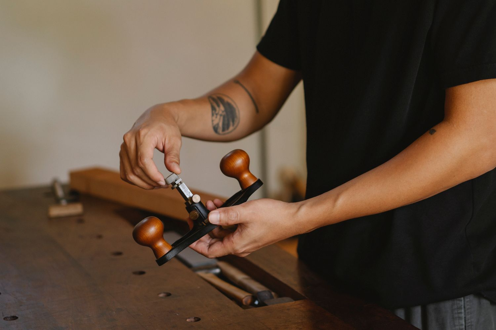

The coming-home bench.
One saved beam. A place to put down your bag, pull off your boots and arrive home.
- The piece
- Seating
- The timber
- Salvaged timber
- The purpose
- An everyday welcome
- The starting point
- A little of home

A small piece.
A daily ritual.
A narrow hallway called for something useful that wouldn’t make the space feel full. The timber had been kept through a renovation, too characterful to throw away and too short for a dining table.
A bench gives the beam a clear job. The design follows the length of the sound timber, keeping the visual weight low and leaving space underneath for shoes. Worn areas stay visible where they’re comfortable to live with.
Character you can sit with.
A seat needs to feel steady, smooth and welcoming. The imagined build keeps the surface honest while softening the front edge, so the first few minutes at home feel a little easier.

“It’s the first thing we use when we come in. Such a small thing, but it makes the hallway feel like ours.”
Anika · illustrative client words

What could yours
become?
Share the timber you have and the piece you’re imagining.
Start a conversation